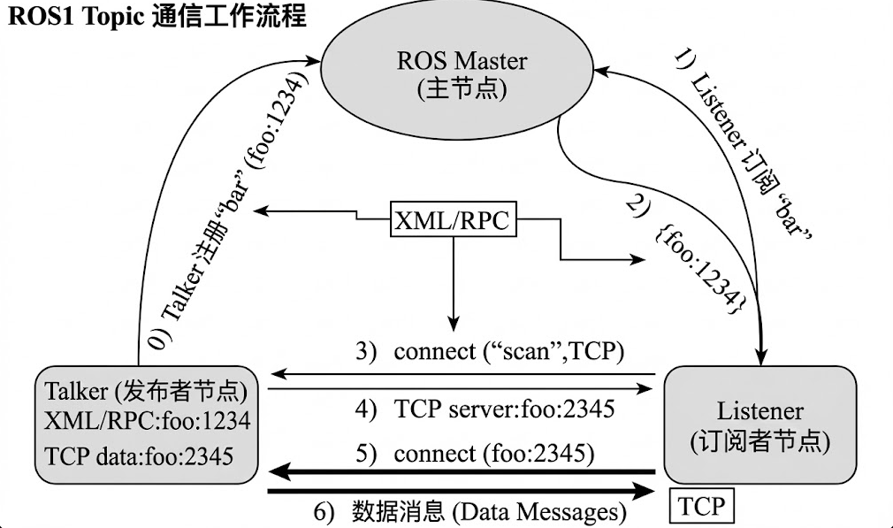

4.2 Topic 话题通信机制
4.2.1 Topic 通信基本概念
Topic 是 ROS 中最常用的通信方式，采用发布 / 订阅模型：
- Publisher（发布者）：负责发布数据
- Subscriber（订阅者）：负责接收数据
- Message（消息）：数据载体
特点：
- 发布者与订阅者互不感知
- 支持一对多、多对多通信
- 数据连续流动
4.2.2 Topic 通信工作流程

- 节点启动并向 ROS Master 注册
- Publisher 声明自己要发布某个 Topic
- Subscriber 声明自己要订阅某个 Topic
- ROS Master 负责建立节点之间的连接
- 数据在节点之间直接传输
4.2.3 使用命令行理解 Topic 通信
以小海龟为例：
roscore
rosrun turtlesim turtlesim_node
查看话题：
rostopic list
查看话题信息：
rostopic info /turtle1/cmd_vel
监听话题数据：
rostopic echo /turtle1/pose